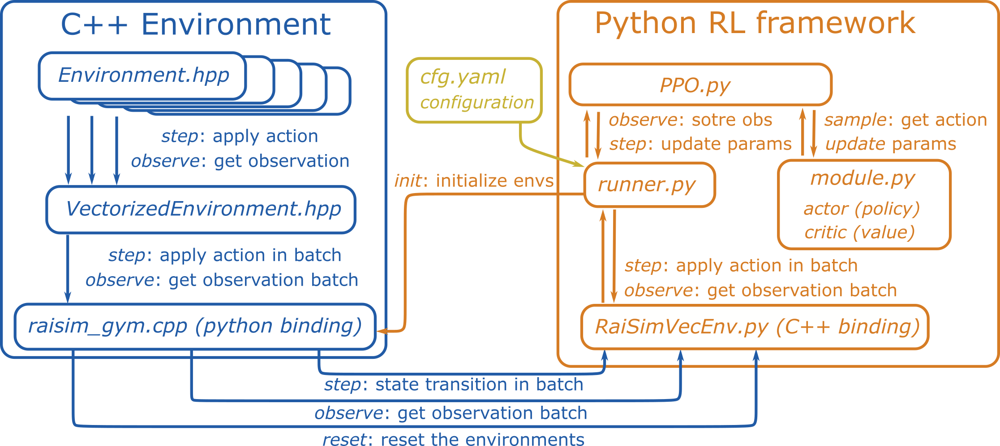

RaisimGymTorch¶
What is raisimGymTorch?¶
{kind=link}
raisimGymTorch is a gym environment example with raisim. A simple pytorch-based RL framework is provided as well but it should work well with any other RL frameworks. Instead of using raisimPy, pybind11 wraps a vectorized environment in C++ so that the parallelization happens in C++. This improves the speed tremendously.
Why raisimGymTorch?¶
raisimGymTorch is designed such that you can collect tens of billions of state transitions with a single desktop machine. Such a number of state transitions is necessary to train for very difficult tasks. An example of a trained policy is shown below


About 160 billion time steps were used to train the above controller. raisimGymTorch can process about 500k time steps per second in the above environment (with 3950x) with an actuator network (which is as heavy as the physics simulation).
Dependencies¶
Assuming that you have installed raisim,
Anaconda
pytorch (https://pytorch.org/)
to use GPU, install cuda as well. Install the version recommended by pytorch
The rest of the dependencies are installed when you build a raisimGym environment for the first time
How to run the example¶
We provide an ANYmal locomotion example. In the raisimGymTorch directory,
python setup.py develop
python raisimGymTorch/env/envs/rsg_anymal/runner.py
To visualize the policy, run raisimUnity as well.
It will show/record the performance of the policy every 200 iterations.
All recorded videos can be found in raisimlib/raisimUnity/<OS>/screenshots
How to debug¶
A pybind11 package (e.g., your environment) might be difficult to debug because you have to write it in C++ but you cannot run it as a normal executable. So we provide a debug app that wraps your environment and creates an executable. To build the debug app, build your environment with
python setup.py develop --Debug
Then, the debug executable is created next to your pybind11 package (raisimGymTorch/raisimGymTorch/env/bin).
If you use CLion (which is recommended), open raisimGymTorch directory in CLion.
It will automatically add the debug app executable.
It provides a convenient gui for debugging.
You can run the debug app as
./debug_app_<environment name> <full path to rsc directory> <full path to the cfg file>
or add the arguments to CLion executable configuration then run.
In Windows, make sure that you are linking against the debug-build raisim. Visual Studio compiled executables will not work if it links against a library built with different compile flags.
How does it work?¶
RaiSimGymTorch wraps a c++ environment (i.e., ENVIRONMENT.hpp) as a python library using Pybind11.
When you call python3 setup.py develop, all environments under raisimGymTorch/raisimGymTorch/env/envs are compiled.
The compiled libraries are stored in raisimGymTorch/raisimGymTorch/env/bin.
All the rest happens in Python.
You can import your environment from your python code.
For example, the anymal locomotion example can be imported as from raisimGymTorch.env.bin import rsg_anymal
Your launch file (e.g., runner.py) can be customized for your need.
How to add a custom environment?¶
You can copy raisimGymTorch/raisimGymTorch to another location.
Make sure that you delete all temporary directories build and raisim_gym_torch.egg-info (they are created when you run python setup.py develop).
To build in another directory, you have to let cmake know where you have raisim as
python setup.py develop --CMAKE_PREFIX_PATH <WHERE-YOU-HAVE-RAISIM>/raisim/<OS>
Everything will work without further operations. However, if you want to keep multiple environments, you might want to change a few of them.
Package name: You can find it in
setup.py(name='raisim_gym_torch'). This is the name you will find insite_packagesdirectory of your anaconda environment.Directory name: This is the directory name that you will find in the top
raisimGymTorchdirectory. The default name is alsoraisimGymTorchdirectory. Modify it if necessary. Then, you have to modify the directories in the header ofrunner.pyand theCMakeLists.txt.Binary name: This is the name of the directory of your environment. The default name is
rsg_anymal. If you change the directory name, you have to renamersg_anymalinrunner.pyfile.Environment name: This is the name of the binary that will be built from your
Environment.hppfile. The default name isRaisimGymVecEnv. You can find it inraisim_gym.cppfile. If you change it, you also have to change the name isrunner.pyfile.You can also just create another conda environment to avoid name conflicts.
Code structure (if you are curious)¶
ENVIRONMENT class is where you define the dynamics, reward, termination condition and so on.
This class inherits from RaisimGymEnv, which add basic functionalities to the environment such as setSimulationTimeStep, setControlTimeStep, getObDim and so on.
If RaisimGymEnv is not general enough for you, you can also make ENVIRONMENT independent from RaisimGymEnv.
RaisimGymEnv is wrapped by VectorizedEnvironment, which parallelizes the environment using openmp.
You can consider it similar to VectorEnv in OpenAI Baselines but RaisimGym parallelization happens in C++, which makes it orders of magnitude faster.
raisim_gym.cpp is a Pybind11 wrapping of VectorizedEnvironment.
It simply defines the interface functions.
Finally, RaisimGymVecEnv is a python class that wraps a python library created from raisim_gym.cpp.
Common issues and solutions¶
If python scripts complain about missing “libcudnn.so”: conda install -c nvidia cudnn